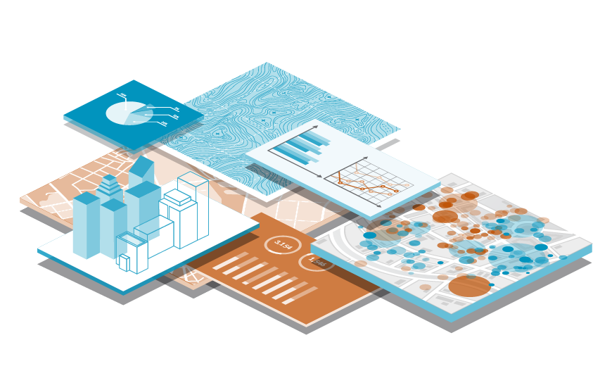

חטיבת הגאו-אינפורמטיקה תומכת במהלכי תכנון עיר ונדל"ן מהמורכבים והמסועפים בישראל. בהתבסס על מסד נתונים עשיר וטכנולוגיית סינתזה מתקדמת, החטיבה פיתחה את תחום הGIS מעבר לעולמות התוכן המסורתיים ליצירת ידע חדש ומעמיק. החטיבה נותנת שירות לגופים וארגונים כחלק מתהליכי קבלת החלטות, חיזוי אסטרטגי ופיתוח עסקי.
קראו עודלכה לעמ עדימ
,מומחים בתחומי גאו-אינפורמטיקה .תשתיות תכנון ונדל"ן, ומחשוב מסמכים

Geodata
מערכת המידע הגאוגרפי והעירוני הנגישה והמקיפה בישראל. מספקת בינה מבוססת מיקום לארגונים, יזמים ועסקים קטנים.

מכון בקרה
תהליכי נדל"ן ואישורי בנייה מונגשים לאזרח.

חטיבת גא
חטיבת גאו-אינפורמטיקה
חטיבת הגאו-אינפורמטיקה תומכת במהלכי תכנון עיר ונדל"ן מהמורכבים והמסועפים בישראל. בהתבסס על מסד נתונים עשיר וטכנולוגיית סינתזה מתקדמת, החטיבה פיתחה את תחום הGIS מעבר לעולמות התוכן המסורתיים ליצירת ידע חדש ומעמיק. החטיבה נותנת שירות לגופים וארגונים כחלק מתהליכי קבלת החלטות, חיזוי אסטרטגי ופיתוח עסקי.
קראו עוד

חטיבת תשתיות תכנון ומקרקעין
ניהול וליווי תהליכי תכנון משולבים ומורכבים בהתבסס על עשרות שנות ניסיון. כוחה של Geoda בתחום זה נשען על שיתוף הפעולה עם חטיבת הגאו-אינפורמטיקה להפקת ניתוחים מורכבים ותובנות תכנוניות בעלות ערך אסטרטגי. קראו עוד
קראו עוד